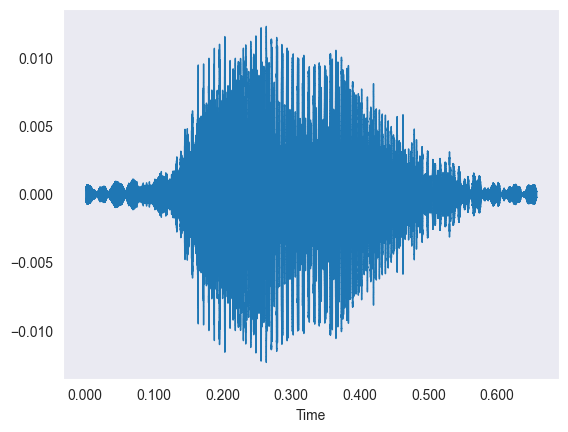
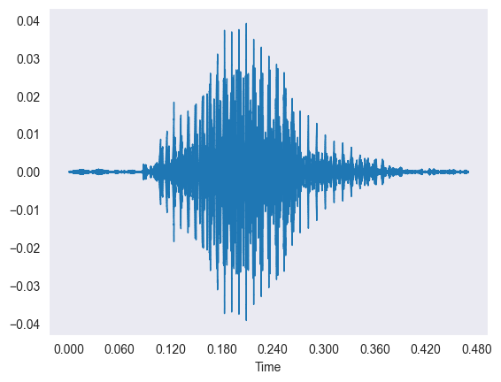
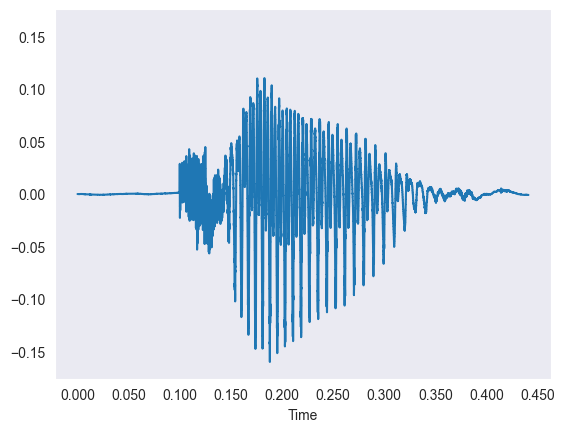
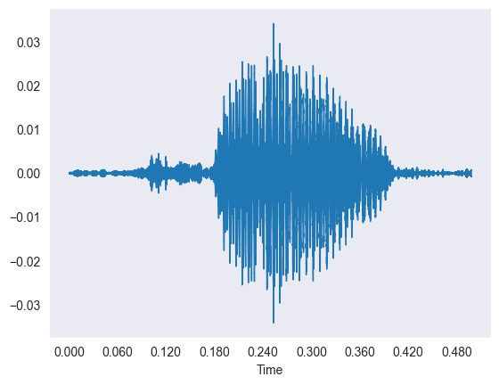
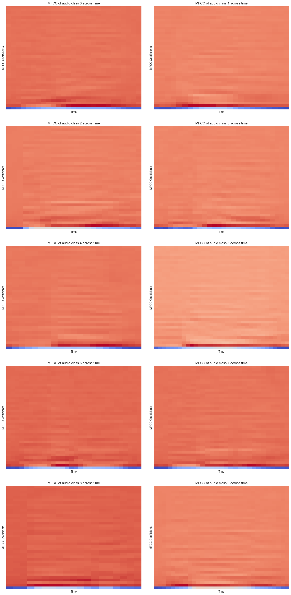
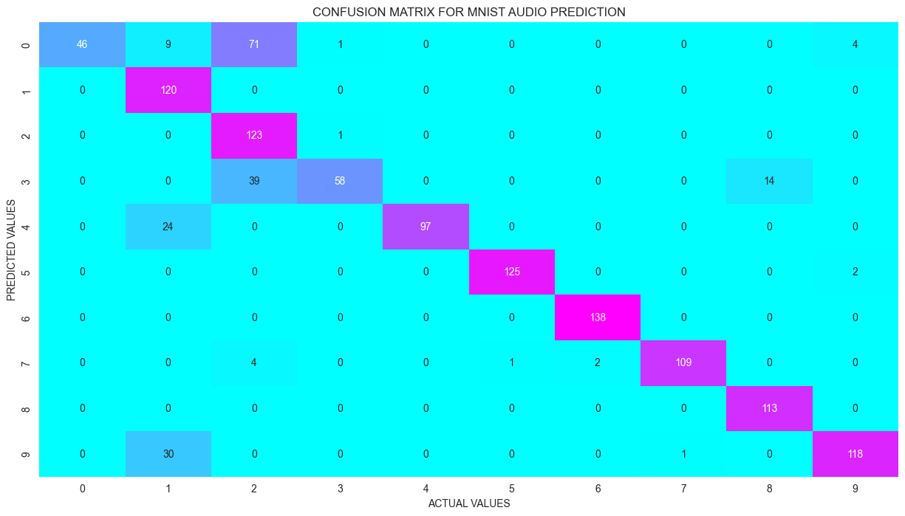
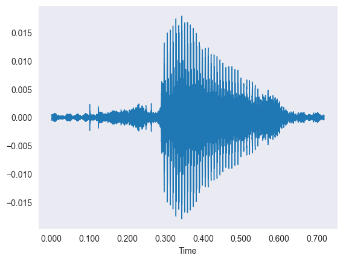
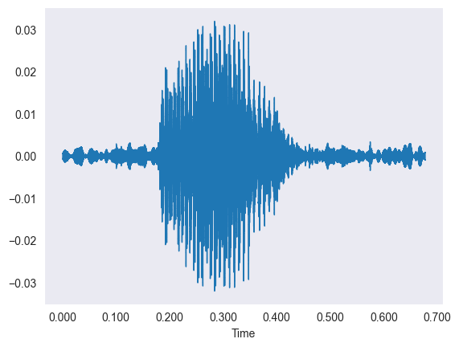
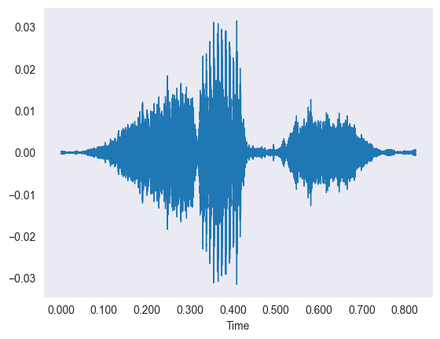
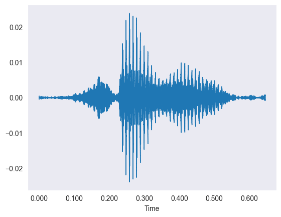

Overview
We taught a computer to listen to someone say a number from zero to nine and correctly recognize which digit was spoken.
- Speech recognition is a core deep-learning application; the goal here is recognizing spoken digits 0-9 from raw audio.
- Input is short .wav recordings of people pronouncing single digits, spanning many speakers, pitches, and timbres.
- Objective: build a classifier that maps an audio clip to one of 10 digit classes regardless of who is speaking.
- Challenge is converting variable-length sound waves into a fixed, model-ready numeric representation.
- Framed as a 10-class supervised classification task evaluated on held-out audio.
Methodology
flowchart LR A[Image Dataset] --> B[Resize / Normalize / Augment] B --> C["CNN: Conv + Pooling layers"] C --> D[Dense + Softmax] D --> E[Train w/ Early Stopping] E --> F["Evaluate: Accuracy and Confusion Matrix"]
The Data (Audio)
The data is thousands of short sound clips of people saying digits, which we first looked at as wiggly waveforms.
- Dataset of 5,000 spoken-digit .wav clips covering all 10 classes (0-9) from multiple speakers.
- Audio loaded with librosa and resampled to a standard 22,050 Hz sample rate for consistency.
- Each waveform plots time on the X-axis against amplitude on the Y-axis of the sound vibration.
- Spectrograms reveal how signal strength is distributed across frequency and time within each clip.
- Clips vary in length, motivating a feature step that yields a fixed-size vector per recording.




Feature Extraction (MFCC)
Instead of feeding raw sound in, we summarized each clip into 40 numbers that capture the shape of its sound.
- Mel-Frequency Cepstral Coefficients (MFCCs) are the standard audio features for ML on speech.
- librosa.feature.mfcc extracts 40 coefficients per time step from each resampled waveform.
- Per-clip features averaged across time, collapsing variable-length audio into a fixed 40-value vector.
- MFCC spectrograms show patterns unique to each digit, so similar sounds yield similar features regardless of speaker.
- The result is a clean tabular dataset of 40 features per sample ready for the neural network.

Model Architecture
We used a simple neural network with several layers of artificial neurons to learn the digit from the 40 features.
- Feed-forward Artificial Neural Network (ANN) built with Keras Sequential since spatial locality is not needed for averaged MFCCs.
- Three hidden Dense layers of 100 ReLU neurons each, taking the 40-feature input vector.
- Output is a 10-neuron softmax layer producing a probability for each digit class.
- Compiled with the Adam optimizer and sparse categorical cross-entropy loss.
- Data split 75/25 into 3,750 training and 1,250 test samples; ModelCheckpoint saves the best model.
Results
Even after a short training run, the network correctly identified the spoken digit most of the time.
- Deck was re-run with reduced epochs (3) for speed, so accuracy reflects a brief training budget.
- Test accuracy reached roughly the mid-80s percent, with validation accuracy climbing across epochs.
- Several digits (5, 6, 7) achieved near-perfect precision and recall on the test set.
- Confusion matrix shows most clips classified correctly, with a few mix-ups (e.g. some 0s predicted as 2).
- Performance would improve further with more training epochs and tuning.

Key Takeaways
Turning sound into the right summary features let a small, simple network recognize spoken digits well.
- MFCC feature engineering is the key step that makes audio classification tractable for a basic ANN.
- Averaging MFCCs over time gives speaker-invariant, fixed-length inputs that generalize across voices.
- A compact 3-layer network reaches strong accuracy, showing heavy CNNs are not always required.
- More epochs and hyperparameter tuning are the clearest path to closing the remaining error gap.
- Built with: librosa, NumPy, pandas, scikit-learn, Matplotlib, and TensorFlow/Keras.
More Visualizations




Tech Stack
- pandas — data wrangling and tabular manipulation
- numpy — fast numerical arrays
- scikit-learn — modeling, pipelines, and evaluation
- seaborn — statistical visualization
- matplotlib — plotting
- tensorflow — deep-learning framework
- keras — high-level neural-network API
- librosa — audio feature extraction (MFCC)
Attribution
This project was completed as part of the MIT Applied Data Science Program (MIT IDSS / Great Learning). The program provided the case-study scaffolding; the analysis, code, and results are my own. Published with permission, for portfolio use only.